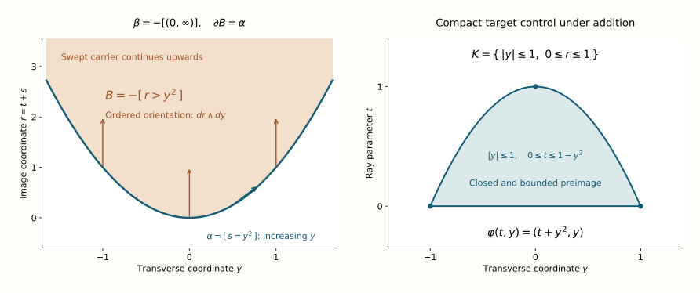

The dualizing resolution by subanalytic chains
A cycle germ below the dimension of its ambient manifold can be swept along a half-ray to produce a primitive. The sweep may be unbounded. What makes it a legitimate chain construction is properness on its closed carrier. This local argument proves that the chain complex resolves the dualizing complex. Its untensored cycle sheaves are flat, so tensoring with arbitrary sheaf coefficients preserves the cycle kernels.
Original lesson text and solutions: CC0 1.0 Universal. Human mathematical sources retain their named credit and their own terms.
Subanalytic chains and closed cycle supports constructs the complex and its canonical orientation map. Supports, products and proper images of chains proves chain-stalk flatness, proper pushforward, boundary compatibility and ordered products. Its proofs retain arbitrary coefficients. The geometry below uses subanalytic set calculus and the compatible triangulation theorem. The algebraic steps will use the proved flat-quotient, Tor and tensor-comparison maps at their points of application.
M. Kashiwara's Index theorem for constructible sheaves, Astérisque 130 (1985), §§1.3–1.6, defines subanalytic chains without a compact-support requirement and states the chain resolution and its coefficient form. We prove the local exactness by a proper transverse projection and a signed half-ray sweep, then derive the coefficient statement from flat cycle sheaves.
The local problem and its degrees
Let \(A\) be a commutative ring of finite global dimension. Let \(X\) be a real analytic \(n\)-manifold, Hausdorff and countable at infinity. All statements are local on components of fixed, uniformly bounded dimension. Keep the cohomological convention
\[ \mathcal C^{-p}=\mathcal C_p,\qquad d^{-p}=\partial_p,\qquad \mathcal Z_p=\ker(\partial_p),\qquad \mathcal C_{-1}=0. \qquad\text{(1)} \]The complex is concentrated in degrees \([-n,0]\), and the top cycles are the orientation sheaf:
\[ \mathcal Z_n\simeq\operatorname{or}_X,\qquad \omega_X\simeq\operatorname{or}_X[n] \longrightarrow \mathcal C. \qquad\text{(2)} \]The map in (2) is the canonical map already constructed from oriented top-dimensional pieces. To prove it is a quasi-isomorphism, it suffices to show that every germ in \(\mathcal Z_p\) is a boundary for \(0\leq p<n\). The degree \(p=0\) is included: every zero-chain is a cycle, since its outgoing boundary is zero.
Choose such a germ \(\alpha_x\). The closed-cycle presentation gives a representative on a closed subanalytic carrier after shrinking around \(x\). A germ of a section of the kernel sheaf is represented by an actual cycle on a neighborhood: first choose a chain section, and then shrink until its boundary is zero. The supported-cycle identity then represents that cycle on a closed \(S\) of dimension at most \(p\). In (3) and the local construction that follows, \(X\) denotes this open neighborhood, not the original whole manifold. We have a section
\[ \alpha\in H^{-p}(S;\omega_S) \subset\Gamma(X;\mathcal Z_p),\qquad \operatorname{supp}(\alpha)\subset S. \qquad\text{(3)} \]We must choose coordinates in which projection transverse to one coordinate is proper on \(S\). No smoothness or finite-fibre hypothesis on \(S\) is needed.
A direction outside the point normal cone
Place \(x\) at \(0\) in an analytic chart in \(\mathbb R^n\). If the cycle germ is zero there is nothing to prove, so we may take \(0\in S\). The point normal cone has the sequence description
\[ C_0S=\{\,v:\ z_j\in S,\ z_j\to0,\ \lambda_j>0,\ \lambda_jz_j\to v\,\}. \qquad\text{(4)} \]This is the cone at the fixed point \(0\), formed from the radial displacements \(z_j-0\). It is not the cone of differences of two moving points of \(S\). The positive-parameter deformation below will prove its closedness, subanalyticity and dimension bound together.
We need its dimension bound. Consider the positive-parameter deformation
\[ E=\{(v,t):t>0,\ tv\in S\}. \qquad\text{(5)} \]The analytic diffeomorphism \((z,t)\mapsto(z/t,t)\), for \(t>0\), identifies \(E\) with \(S\times\mathbb R_{>0}\); hence \(\dim E\leq p+1\). Near a point \((w,0)\), multiplication \((v,t)\mapsto tv\) takes a sufficiently small neighborhood into the chosen chart at \(0\). Thus the analytic inverse-image calculus applied to the closed subanalytic \(S\), and then intersection with \(t>0\), makes \(E\) locally closed and subanalytic also near the zero-parameter fibre. No assertion about an image under an uncontrolled nonproper map is needed.
In fact \(\overline E\cap\{t=0\}=C_0S\times\{0\}\). If \((v_j,t_j)\in E\) tends to \((w,0)\), take \(z_j=t_jv_j\) and \(\lambda_j=1/t_j\) in (4). Conversely, for a nonzero \(w\) represented in (4), \(\lambda_j\to\infty\), since \(z_j\to0\) while \(\lambda_jz_j\to w\ne0\). Then \((\lambda_jz_j,1/\lambda_j)\in E\) tends to \((w,0)\). The zero vector is obtained from \((0,t_j)\in E\), using \(0\in S\). This equality proves closedness and subanalyticity of \(C_0S\); positive dilation preserves its sequence description, and it contains zero.
Apply compatible locally finite triangulation to \(E\), \(\overline E\) and their difference in a neighborhood of the zero-parameter fibre. To see the dimension loss, choose a point in an open simplex \(\sigma\) of \(\overline E\setminus E\). A sequence from \(E\) approaching that point meets only finitely many simplices near it; pass to one open simplex \(\tau\subset E\) containing a subsequence. The closure of \(\tau\) contains the chosen point, so the simplicial face property makes \(\sigma\) a face of \(\tau\). They are distinct, because one is disjoint from \(E\) and the other lies in \(E\). Hence \(\dim\sigma<\dim\tau\leq p+1\). Taking the supremum over frontier simplices proves \(\dim(\overline E\setminus E)\leq p\). The zero fibre is in this frontier, so the equality just proved gives
\[ \dim C_0S\leq p<n. \qquad\text{(6)} \]The finite union \(C_0S\cup(-C_0S)\) also has dimension at most \(p<n\), so it cannot equal \(\mathbb R^n\). Choose a nonzero vector outside that union and normalize it to a unit vector \(v\). Positive conicity ensures that normalization preserves avoidance, so \(v,-v\notin C_0S\). Both signs are needed to exclude the entire projection kernel. Write \(z=(s,y)\in\mathbb R_v\times v^\perp\) in orthogonal coordinates and let \(Pz=y\).
There are \(\rho,c>0\) such that
\[ |Pz|\geq c|z|\quad(z\in S,\ |z|<\rho),\qquad |s|\leq C|y|,\quad C=1/c. \qquad\text{(7)} \]Proof. If no such \(\rho,c\) existed, for every positive integer \(j\) we could choose \(z_j\in S\) with \(0<|z_j|<1/j\) and \(|Pz_j|<|z_j|/j\). After passing to a subsequence, \(z_j/|z_j|\) converges on the unit sphere. Its transverse coordinate is zero, so its limit is \(v\) or \(-v\). With \(\lambda_j=1/|z_j|\), (4) would put that limit in \(C_0S\), a contradiction. The second inequality follows from \(|s|\leq|z|\leq |y|/c\). The point \(z=0\) satisfies both inequalities as well. \(\square\)
Choose positive \(\epsilon,\delta\) with \(\sqrt{\epsilon^2+\delta^2}<\rho\) and \(C\delta<\epsilon/2\). In the box
\[ Q=(-\epsilon,\epsilon)\times B_\delta,\qquad S_Q=S\cap Q, \quad |s|<\epsilon/2\text{ on }S_Q, \qquad\text{(8)} \]the projection \(S_Q\to B_\delta\) is proper. For a compact \(K\subset B_\delta\), every point of its inverse image satisfies \(|s|\leq C|y|<\epsilon/2\). Hence that inverse image equals \(S_Q\cap([-\epsilon/2,\epsilon/2]\times K)\). The product on the right is compact and lies entirely in \(Q\); since \(S_Q\) is closed relative to \(Q\), the intersection is closed in this compact product. It is therefore compact. This uses neither smoothness of \(S_Q\) nor finiteness or constancy of its fibres. When \(n=1\), the transverse ball is a point and the same argument gives a compact carrier.
Finally replace \(s\) by the analytic coordinate
\[ \sigma=\tan\!\left(\frac{\pi s}{2\epsilon}\right). \qquad\text{(9)} \]This is an analytic diffeomorphism from \(Q\) onto \(X'=\mathbb R_\sigma\times B_\delta\), with analytic inverse \(s=(2\epsilon/\pi)\arctan\sigma\). It commutes with transverse projection. Its image \(S'\) of \(S_Q\) is closed, is subanalytic by analytic inverse image under the inverse diffeomorphism, and satisfies \(|\sigma|<1\). Every compact transverse inverse image is the homeomorphic image of the compact inverse image already proved, so \(S'\to B_\delta\) remains proper. Transport the cycle and its orientations by this analytic diffeomorphism. The chain pushforward for a diffeomorphism and its inverse commutes with the boundary and gives inverse maps, so any primitive constructed on \(X'\) returns to a primitive on \(Q\). We have obtained \(X'=\mathbb R\times Y\) with a closed carrier proper over \(Y\); now rename these \(X,S\).
The half-ray contracts every lower cycle germ
Orient the positive coordinate line by increasing \(t\). Its open half-ray has the closed chain support \([0,\infty)\), and terminal-minus-initial boundary gives
\[ h=[(0,\infty)],\qquad \partial h=-[0],\qquad \beta=-h,\quad \partial\beta=[0]. \qquad\text{(10)} \]There is no endpoint at infinity in the locally finite chain sheaf. Place the half-ray factor first and form
\[ \gamma=\beta\boxtimes\alpha \in\Gamma(\mathbb R_t\times X;\mathcal C_{p+1}),\qquad \operatorname{supp}(\gamma)\subset[0,\infty)\times S. \qquad\text{(11)} \]Use the ordered product boundary rule (17), with the ray of geometric degree one placed first. The product \([0]\boxtimes\alpha\) equals \(i_*\alpha\): the point orientation contributes the degree-zero unit, and the product trace is the closed-embedding trace of \(i\). Thus \(\partial\alpha=0\) gives
\[ \partial\gamma =(\partial\beta)\boxtimes\alpha +(-1)^1\beta\boxtimes\partial\alpha =i_*\alpha,\qquad i(x)=(0,x). \qquad\text{(12)} \]The support containment is sufficient; it need not be equality for every coefficient ring.
Use the analytic addition map
\[ \varphi:\mathbb R_t\times(\mathbb R_s\times Y) \longrightarrow\mathbb R_r\times Y,\qquad \varphi(t,(s,y))=(t+s,y). \qquad\text{(13)} \]Its restriction to \(\mathbb R\times S\) is proper. Let \(K\) be compact in \(\mathbb R_r\times Y\), and let \(K_Y\) be its compact projection to \(Y\). Properness of \(S\to Y\) makes \(S_{K_Y}\) compact. Choose \(R_0,M\) bounding \(|r|\) on \(K\) and \(|s|\) on \(S_{K_Y}\). On \(\varphi^{-1}K\cap(\mathbb R\times S)\), the identity \(t=r-s\) gives \(|t|\leq R_0+M\). This inverse image is a closed subset of the compact product \([-R_0-M,R_0+M]\times S_{K_Y}\), and is therefore compact. The closed half-ray carrier \([0,\infty)\times S\), and the closed support of \(\gamma\) inside it, inherit this properness. The proof allows an unbounded carrier and an unbounded primitive; it controls inverse images of every compact target set.
Thus the proper-chain operation from the preceding lesson applies to \(\gamma\). Put
\[ B=\varphi_*\gamma\in\Gamma(X;\mathcal C_{p+1}). \qquad \partial B=\varphi_*\partial\gamma =\varphi_*i_*\alpha=\alpha. \qquad\text{(14)} \]The first equality uses the proper trace and boundary compatibility (12). For the last equality, \(i\) is a closed embedding and is proper on \(S\); the restriction of \(\varphi\) to its image \(i(S)\) is the identity onto the closed \(S\), hence proper. These are the actual support hypotheses for composing the two chain pushforwards. Their normalized traces compose to the identity trace of \(\varphi i=\mathrm{id}_X\). No factor is exchanged and no extra sign is introduced.
We have produced a primitive of each lower cycle germ after a suitable shrink. It depends on the carrier and the chosen coordinates. This is a proof of stalkwise exactness, with no assertion of a single global contracting operator or a compactly supported primitive.

Figure 1. In the global parabola example of Exercise 2, \(\alpha\) is oriented by increasing \(y\), \(\varphi(t,y)=(t+y^2,y)\), and \(B=-[r>y^2]\) has ordered orientation \(dr\wedge dy\). Its closed carrier is \(r\geq y^2\) and continues upwards beyond the finite view. On the right the exact inverse image of \(K=\{|y|\leq1,\ 0\leq r\leq1\}\) is \(0\leq t\leq1-y^2\), a closed bounded set. This illustrates the sign in (10)–(14) and the compact-inverse-image proof of properness in (13). The half-ray construction and signed sweep exercise give the intrinsic proof. This explicit parabola computation and reproducible figure source are newly written.
The canonical map is a quasi-isomorphism
For \(0\leq p<n\), (14) says \((\mathcal Z_p)_x=\operatorname{im}(\partial_{p+1})_x\) at every \(x\). The other cohomology group is \(H^{-n}(\mathcal C)=\mathcal Z_n=\operatorname{or}_X\), since \(\mathcal C_{n+1}=0\). The canonical map (2) induces the orientation identification in this degree. Both objects have zero cohomology outside \([-n,0]\). Therefore
\[ \omega_X\xrightarrow{\sim}\mathcal C \quad\text{in }D^b(A_X). \qquad\text{(15)} \]When \(n=0\), \(X\) is discrete locally, \(\mathcal C_0=A_X\), and (15) is the identity in degree zero. There are no lower degrees to contract. At the other extreme the top orientation germ in dimension \(n\) survives; the avoidance argument required \(p<n\).
Flat cycles preserve coefficient kernels
Each \(\mathcal C_p\) is flat by the finite-free stalk presentation. That proof uses only the chain presentation, not the local exactness being proved here. The new local exactness now gives, for \(1\leq p\leq n\),
\[ 0\longrightarrow\mathcal Z_p \longrightarrow\mathcal C_p \xrightarrow{\partial_p}\mathcal Z_{p-1} \longrightarrow0,\qquad \mathcal Z_0=\mathcal C_0. \qquad\text{(16)} \]The final map lands in cycles because \(\partial^2=0\), and is surjective because \(p-1<n\). Thus (16) includes \(p=n\).
Proof of flatness. Work at an arbitrary stalk and test against an arbitrary \(A\)-module \(M\). The base module \((\mathcal Z_0)_x=(\mathcal C_0)_x\) is flat. Assuming \((\mathcal Z_{p-1})_x\) flat, the long exact Tor sequence and flatness criterion, Proposition 3.2 and Theorem 3.3, applied to (16), have the exact segment \(\operatorname{Tor}_2((\mathcal Z_{p-1})_x,M)\to\operatorname{Tor}_1((\mathcal Z_p)_x,M)\to\operatorname{Tor}_1((\mathcal C_p)_x,M)\). The outside groups vanish because their first inputs are flat. The middle group therefore vanishes for every \(M\), making \((\mathcal Z_p)_x\) flat. Induction reaches \(p=n\); degrees outside the range have zero sheaf. The stalk criterion for flatness, Lemma 1.2, proves sheaf flatness. No finite-generation or field hypothesis is used. \(\square\)
For any sheaf \(F\) of \(A\)-modules put \(\mathcal C_p(F)=\mathcal C_p\otimes_A F\) and \(\mathcal Z_p(F)=\mathcal Z_p\otimes_A F\). On every stalk, the term immediately before \((\mathcal Z_p)_x\otimes_A F_x\) in the tensor exact sequence is \(\operatorname{Tor}_1((\mathcal Z_{p-1})_x,F_x)\). It vanishes because the quotient \(\mathcal Z_{p-1}\) in (16) is flat. Thus tensor preserves the injection as well as the right-exact part, giving
\[ 0\longrightarrow\mathcal Z_p(F) \longrightarrow\mathcal C_p(F) \longrightarrow\mathcal Z_{p-1}(F) \longrightarrow0. \qquad\text{(17)} \]For \(p=1\), the target \(\mathcal Z_0(F)=\mathcal C_0(F)\) is already the next chain sheaf. For \(p>1\), apply (17) also in degree \(p-1\); it embeds \(\mathcal Z_{p-1}(F)\) into \(\mathcal C_{p-1}(F)\). The boundary \(\mathcal C_p(F)\to\mathcal C_{p-1}(F)\) factors as the surjection in (17) followed by this injection. Its kernel is therefore precisely the first term of (17), proving
\[ \mathcal Z_p(F)= \ker\!\left(\mathcal C_p(F)\xrightarrow{\partial_p} \mathcal C_{p-1}(F)\right). \qquad\text{(18)} \]The case \(p=0\) follows from \(\mathcal C_{-1}=0\). This is an underived kernel identity for every \(F\), with no flatness, local constancy or finite-rank hypothesis. It does not assert that \(\mathcal Z_p(F)\) is flat: tensoring a flat cycle sheaf with a nonflat coefficient sheaf need not preserve flatness. Exercise 5 gives such a coefficient sheaf.
For \(0\leq p<n\), the surjection in (17) in degree \(p+1\), together with (18), makes the image of the incoming boundary equal to the kernel of the outgoing boundary in degree \(-p\). In degree \(-n\) there is no incoming term and the kernel is \(\mathcal Z_n\otimes_A F=\operatorname{or}_X\otimes_A F\). Thus the coefficient complex has cohomology only in degree \(-n\). Tensor the canonical inclusion of top cycles in (2) with \(F\); the map just computed induces the identity of this surviving cohomology sheaf. This proves its natural identification
\[ \omega_X\otimes_A^L F \simeq \operatorname{or}_X\otimes_A F[n] \xrightarrow{\sim}\mathcal C(F). \qquad\text{(19)} \]The derived-tensor comparison uses bounded flat complexes. The orientation sheaf is locally free of rank one, and \(\mathcal C\) has only the flat terms in degrees \(-n,\ldots,0\). To see why such a bounded complex is K-flat, tensor it with an acyclic complex and filter by its finitely many chain degrees. Each associated quotient is the tensor with one flat sheaf in one degree and is acyclic; the finite filtration makes the total tensor acyclic. This is Lemma 2.3 of the K-flat construction. Consequently either displayed model computes \(\omega_X\otimes_A^L F\), and the tensor comparison for a quasi-isomorphism between K-flat models identifies the map in (19) with tensoring the canonical map (2).
For a bounded complex \(F^\bullet\), take total degree \(-p+q\) on \(\mathcal C_p\otimes_A F^q\), with differential \(c\otimes u\mapsto\partial c\otimes u+(-1)^p c\otimes d_Fu\). In each fixed coefficient degree, the sheaf case of (19) is a quasi-isomorphism. Filtering by the finitely many coefficient degrees and using the long exact cohomology sequence of successive filtration steps proves the total comparison. It is natural in coefficient chain maps and, by K-flatness, in their derived morphisms. This includes arbitrary bounded coefficients without a perfection assumption.
What global sections compute
The cutoff extension argument proves that every \(\mathcal C_p(F)\) is soft, even when \(F\) is arbitrary. It is in particular c-soft. On the locally compact, countable-at-infinity manifolds used here these sheaves are acyclic for both ordinary and compactly supported sections, by the soft-section acyclicity theorem. The chain complex is bounded, so its finite hypercohomology filtration has only the row of ordinary sections, or the row of compactly supported sections, of its terms: all higher derived sections of those terms vanish. Thus the two underived section complexes compute \(R\Gamma(X;\omega_X\otimes_A^L F)\) and \(R\Gamma_c(X;\omega_X\otimes_A^L F)\). Applying (19) gives
\[ \begin{aligned} H^{-p}\Gamma(X;\mathcal C(F)) &\simeq H^{n-p}(X;\operatorname{or}_X\otimes_A F),\\ H^{-p}\Gamma_c(X;\mathcal C(F)) &\simeq H_c^{n-p}(X;\operatorname{or}_X\otimes_A F). \end{aligned} \qquad\text{(20)} \]Softness concerns the terms of the resolution. It does not make every global cycle a global boundary. Nor does it make global sections preserve the surjection onto a cycle sheaf in (16). The circle in Exercise 6 detects this distinction.
Compact support is a second distinction. On the oriented line, the point chain \([0]\) is the boundary of \(\beta\) in (10), whose support is not compact. A compactly supported one-chain cannot have boundary \([0]\): proper collapse to a point would send that boundary to \(1\in A\), whereas the image of a one-chain in the zero-dimensional target is zero. For a nonzero coefficient this contradicts boundary compatibility. Formula (20) records the surviving compact class in degree zero.
Finally, support of the coefficient sheaf can change this calculation. For a sheaf concentrated at a point of a line, the resolution retains the ambient orientation shift \([1]\). Exercise 5 gives an explicit torsion calculation and a compact primitive. The relevant tensor in (19) uses ordinary restriction of the ambient dualizing complex to the coefficient support.
Exercises with complete solutions
A proper projection through a cusp
Difficulty: Advanced.
Near the origin in coordinates \((s,y)\), let \(S=\{s^2=y^3\}\). Identify a direction avoided by its point normal cone and prove the quantitative bound used in (7). Choose a product box in which \(S\) projects properly to the \(y\)-coordinate. Explain why the singular point and the changing number of fibres do not invalidate the proof.
Solution. The real equation forces \(y\geq0\), and \(s=\pm y^{3/2}\). For a nonzero point approaching the origin, \(|s|/y=\sqrt y\to0\); hence every nonzero limiting radial direction is the positive \(y\)-direction. Conversely \(y_j>0\) with \(\lambda_j=1/y_j\) realizes that direction. Thus \(C_0S\) is the nonnegative \(y\)-axis. Both vertical \(s\)-directions are avoided.
For \(0\leq y\leq\rho\), \(|s|=y^{3/2}\leq\sqrt\rho\,y\), giving the required bound directly. Choose \(\delta,\epsilon>0\) so that the box lies in the chart and \(\delta^{3/2}<\epsilon/2\). Its \(S\)-points all have \(|s|<\epsilon/2\). The inverse image of any compact \(K\subset(-\delta,\delta)\) is a closed subset of \([-\epsilon/2,\epsilon/2]\times K\); it is compact inside the box. There are two points in a positive \(y\)-fibre, one at zero, and none at negative \(y\). Properness follows from compact inverse images despite this variation and the singularity. The tangent-coordinate change (9) then gives the full real factor. Avoidance is a sufficient criterion; we have not asserted its necessity for every proper projection.
A signed sweep and a failure of properness
Difficulty: Advanced.
In \(X=\mathbb R_s\times\mathbb R_y\), orient the parabola \(S=\{s=y^2\}\) by increasing \(y\), and call its cycle \(\alpha\). Compute \(B=\varphi_*(\beta\boxtimes\alpha)\) with the factor order in (11), including its sign and boundary. Compute the inverse image of the rectangle in Figure 1. Then test the same addition construction on \(S'=\mathbb R_s\times\{0\}\).
Solution. The parabola projects properly to \(y\): it is the graph of the continuous function \(y^2\), so the inverse image of a compact set is compact. On the swept carrier, coordinates \((t,y)\) map to \((r,y)=(t+y^2,y)\). The Jacobian from the ordered coordinates \((t,y)\) to \((r,y)\) has determinant \(1\). Since \(\beta\) is minus the increasing-\(t\) ray, \[ B=-[r>y^2]\quad\text{with orientation }dr\wedge dy,\qquad \operatorname{supp}(B)=\{r\geq y^2\},\qquad \partial B=\alpha. \qquad\text{(21)} \] The boundary sign also follows directly from (12): the initial face of the positive ray has sign minus, which is cancelled by the minus in \(\beta\). There is no extra sign from moving a factor because no factor was moved.
For \(K=\{|y|\leq1,\ 0\leq r\leq1\}\), \(t\geq0\) and \(r=t+y^2\) give \[ \varphi^{-1}K\cap([0,\infty)\times S) =\{(t,y):|y|\leq1,\ 0\leq t\leq1-y^2\}. \qquad\text{(22)} \] This is the exact closed bounded region in the right panel. More generally compact target bounds give bounds on \(y\), then on \(y^2\), then on \(t\), proving properness for every compact target.
For \(S'\), the projection to \(y\) is not proper. The inverse image of the target point \((0,0)\) under the half-ray sweep is \(\{(t,(s,0)):t\geq0,\ s=-t\}\), which is noncompact. Thus this chosen sweep cannot be pushed forward as a properly supported chain. The one-cycle on \(S'\) is still locally a boundary in the plane; one must choose a transverse sweep direction satisfying the properness condition.
Local exactness does not provide a compact primitive
Difficulty: Intermediate.
On \(\mathbb R\), check the signs of \(-[(0,\infty)]\) and \(-[(0,1)]\). Compare the germ at \(0\), the global boundary and compactly supported chain homology.
Solution. With increasing-coordinate orientations, \(\partial[(0,\infty)]=-[0]\) and \(\partial[(0,1)]=[1]-[0]\). Therefore \[ \partial(-[(0,\infty)])=[0],\qquad \partial(-[(0,1)])=[0]-[1]. \qquad\text{(23)} \] The two primitives have the same boundary germ near \(0\), because a sufficiently small neighborhood excludes \(1\). Globally the finite segment has an additional endpoint. This proves local exactness in degree zero while illustrating why it says nothing about a compact global primitive for a single point.
For a nonzero coefficient \(a\in A\), suppose a compact one-chain had boundary \(a[0]\). Collapse its compact carrier properly to a point. Its one-chain image is zero by target dimension, while the zero-chain image of \(a[0]\) is \(a\). Boundary commutation would give \(0=a\), a contradiction. Thus \(H^0\Gamma_c(\mathbb R;\mathcal C)=A\); ordinary chain homology in degree zero is zero. These also follow from \(\omega_{\mathbb R}=A[1]\), \(H^1(\mathbb R;A)=0\), and \(H_c^1(\mathbb R;A)=A\).
The degree that cannot be contracted
Difficulty: Introductory.
On an oriented \(\mathbb R^n\), locate the orientation germ in \(\mathcal C\) and explain why the half-ray proof excludes it. Include \(n=0\).
Solution. The orientation germ is a nonzero element of \(\mathcal Z_n=H^{-n}(\mathcal C)\). It cannot be a boundary because \(\mathcal C_{n+1}=0\). Its local carrier can be the whole neighborhood, whose point normal cone is \(\mathbb R^n\); there is no vector with both signs outside that cone. The dimension inequality (6) required \(p<n\), and fails here.
Hence the surviving germ is exactly the orientation line in degree \(-n\), in agreement with \(\operatorname{or}[n]\). For \(n=0\), the local complex has only \(\mathcal C_0=A\), with zero differential, and the surviving orientation is in degree zero. The theorem never requires a lower-degree contraction in that case.
Torsion coefficients concentrated at a point
Difficulty: Advanced.
Take \(A=\mathbb Z\), \(M=\mathbb Z/5\), and the oriented line. Compare the resolution with constant coefficient sheaf \(M_{\mathbb R}\) to the resolution with \(F=i_*M\), where \(i:\{0\}\hookrightarrow\mathbb R\). Compute the latter differential explicitly, its compact homology, and a compact primitive for its degree-zero point coefficient.
Solution. Near \(0\), a one-chain germ has two independent oriented coefficients: \(a\) on the left interval and \(b\) on the right interval, both intervals oriented by increasing coordinate. The boundary is \(a-b\) at \(0\). Tensoring these stalks with \(M\) gives, for the point-supported coefficient sheaf, \[ \mathcal C_1(i_*M)=i_*(M^2),\qquad \mathcal C_0(i_*M)=i_*M,\qquad \partial(a,b)=a-b. \qquad\text{(24)} \] Outside \(0\) every coefficient stalk vanishes. The kernel is the diagonal copy of \(M\); the differential is surjective. Thus ordinary and compactly supported cohomology of this two-term complex are \(M\) in degree \(-1\) and zero in degree zero. All its sections have compact point support. For any \(m\in M\), the section \((m,0)\) is a compact primitive of the zero-chain coefficient \(m\).
The kernel identity comes from tensoring \(0\to\mathcal Z_1\to\mathcal C_1\to\mathcal Z_0\to0\): its flat quotient \(\mathcal Z_0\) preserves the injection after tensoring. It does not require \(M\) to be flat; \(M=\mathbb Z/5\) is not flat over \(\mathbb Z\). Formula (19) gives exactly \(\omega_{\mathbb R}\otimes i_*M=i_*M[1]\). Its shift comes from \(i^{-1}\omega_{\mathbb R}=\mathbb Z[1]\). By contrast \(i^!\omega_{\mathbb R}=\omega_{\{0\}}=\mathbb Z\), which is a different operation.
For constant \(M_{\mathbb R}\), formula (20) gives compact cohomology \(M\) in degree zero and zero in degree \(-1\). A nonzero point mass then has no compact primitive, by Exercise 3 with coefficient \(m\). The point-supported coefficient sheaf permits a one-chain section whose support is just the point; the pure one-dimensional support assertion for finite locally free coefficient sheaves does not apply to it. This explains why the two calculations differ.
Global cycles on a circle
Difficulty: Advanced.
Orient a circle and take constant coefficients \(A\). Compute \(H^{-1}\Gamma(\mathcal C)\) and \(H^0\Gamma(\mathcal C)\). Explain why these do not contradict local exactness or softness, and detect a global zero-chain obstruction.
Solution. The orientation identifies \(\omega_{S^1}=A[1]\). The constant-sheaf cohomology of the circle is \(A\) in degrees zero and one. For example the cellular calculation with one vertex and one oriented edge has differential zero: the two incidences of the same vertex have opposite signs. Equivalently a two-arc cover gives the same kernel and cokernel. Formula (20) yields \[ H^{-1}\Gamma(S^1;\mathcal C)=A,\qquad H^0\Gamma(S^1;\mathcal C)=A. \qquad\text{(25)} \] Compact support gives the same groups because the circle is compact.
The first group contains the global oriented circle. The second is detected by total zero-chain weight: every one-chain boundary has total weight zero, because proper collapse to a point commutes with boundary and kills degree one. A point with coefficient \(a\ne0\) therefore survives. Oriented arcs show that all point positions represent the same class, and the displayed calculation shows that total weight identifies the group with \(A\).
Locally every zero-cycle has a primitive as in (14). A choice of local primitives need not glue to a global one. Although \(\mathcal C_1\) and \(\mathcal C_0\) are soft, the surjection \(\mathcal C_1\to\mathcal Z_0\) need not be surjective after global sections. The soft complex computes the nonzero global cohomology of the dualizing complex, exactly as its resolution should.
Mathematical sources
M. Kashiwara, Index theorem for constructible sheaves, Astérisque 130 (1985), §§1.3–1.6, pp. 195–196, is the source for the subanalytic-chain framework, the resolution statement and its coefficient cohomology comparisons. The paper refers the resolution to triangulation. Here the primitive is constructed by a transverse projection, an analytic coordinate change and a properly supported half-ray sweep; the flat-quotient argument proves the arbitrary-coefficient kernel statement.
P. Schapira, An Introduction to Sheaves on Grothendieck Topologies, edition dated 01/08/2026, Lemma 5.1.3, equation (5.1.1) and Proposition 5.1.5(a)–(c), pp. 106–107, describes the shifted orientation object and its integral coefficient origin. The preceding programme lessons prove the soft chain terms and their flat stalks; the proof here adds exactness and the actual coefficient comparison. The six worked exercises distinguish local primitives, compact primitives, ambient orientation shifts and global homology. The cited works retain their authorship and their own terms.